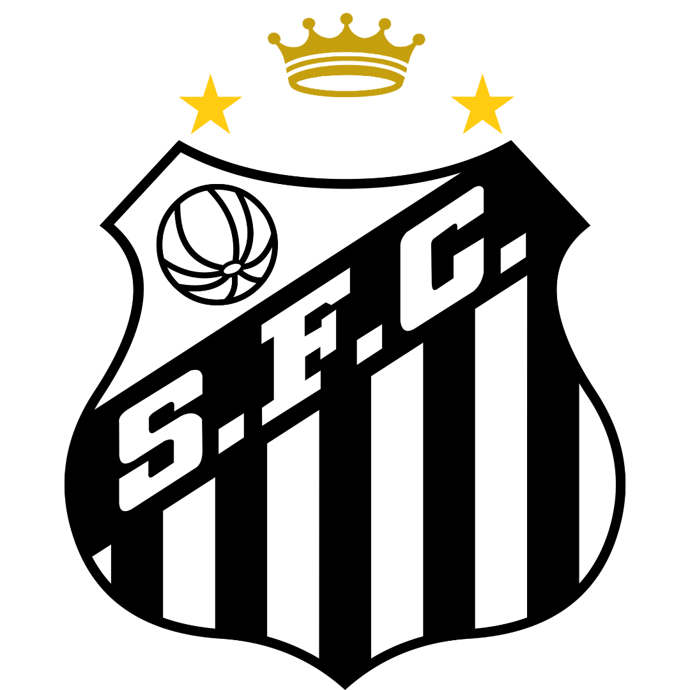
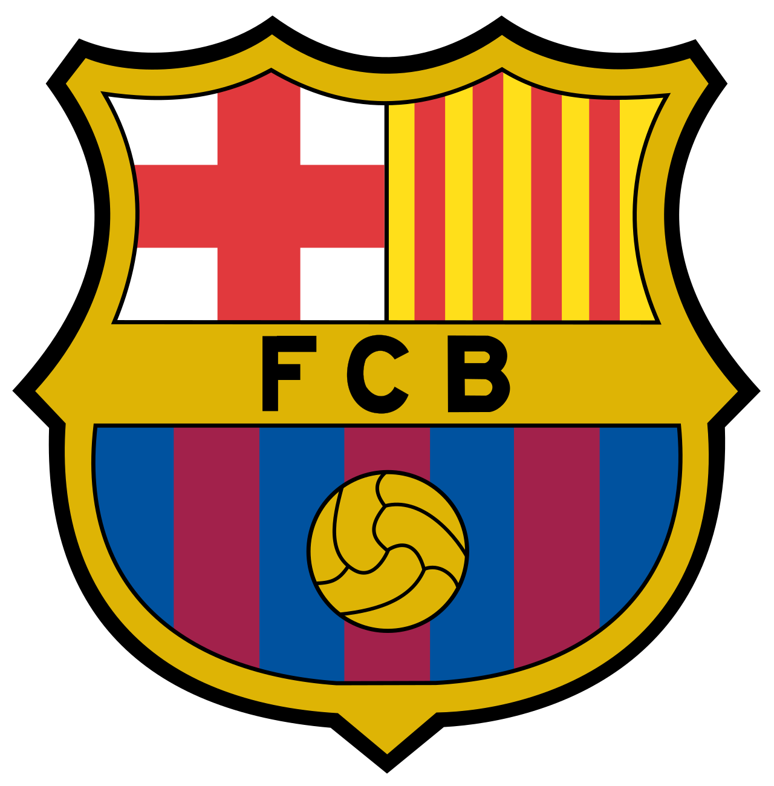
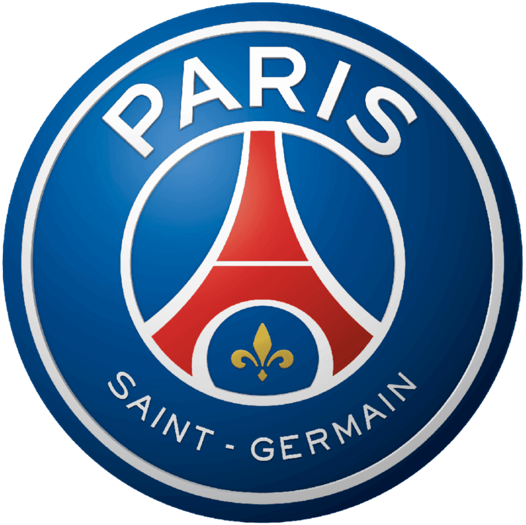

.jpg)
O começo
Neymar da Silva Santos Júnior (Mogi das Cruzes, 5 de fevereiro de 1992) é um dos futebolistas mais talentosos e influentes da história recente do futebol mundial, reconhecido pela habilidade no drible, visão de jogo e capacidade de decisão.

Santos
Criado nas categorias de base do Santos Futebol Clube, Neymar estreou como profissional em 2009, aos 17 anos. Rapidamente se tornou a maior promessa do futebol brasileiro desde Pelé, liderando o Peixe em conquistas históricas: Copa do Brasil (2010) e Copa Libertadores da América (2011). Prêmio Prêmios Puskás da FIFA (2011) pelo gol antológico contra o Flamengo. Tricampeonato Paulista (2010, 2011, 2012).

Barcelona
Em 2013, transferiu-se para o FC Barcelona, onde formou o lendário trio de ataque MSN ao lado de Lionel Messi e Luis Suárez. No clube catalão, conquistou a Liga dos Campeões da UEFA (2014–15), o Mundial de Clubes da FIFA e dois títulos da La Liga.

Paris Saint-Germain
Em 2017, protagonizou a transferência mais cara da história do futebol (222 milhões de euros) ao se juntar ao Paris Saint-Germain (PSG). Na França, conquistou múltiplos títulos nacionais e levou o clube à sua primeira final de Champions League em 2020.
Seleção Brasileira
Pela Seleção Brasileira, Neymar escreveu momentos marcantes: Inédita medalha de ouro olímpica nas Olímpiadas do Rio 2016. Copa das Confederações (2013). Superou Pelé como o maior artilheiro da história da Seleção Brasileira em jogos oficiais da FIFA.
AL-Hilal
Após uma passagem pelo Al-Hilal na Arábia Saudita iniciada em 2023 (marcada por uma grave lesão no joelho), Neymar retornou ao futebol mundial acumulando recordes e mantendo seu impacto cultural dentro e fora dos gramados.